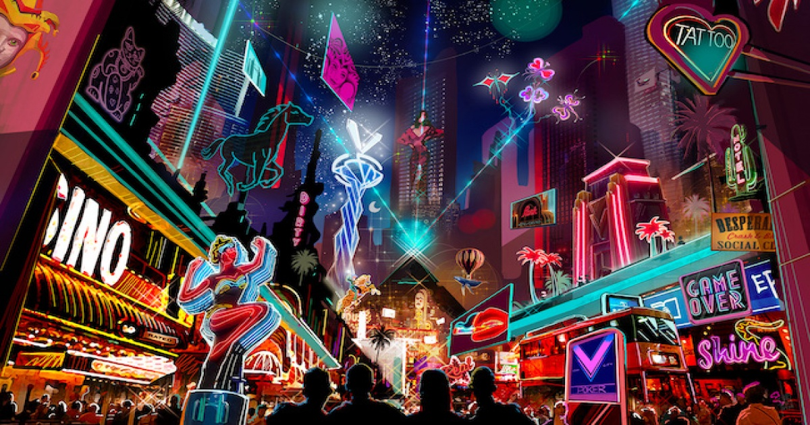
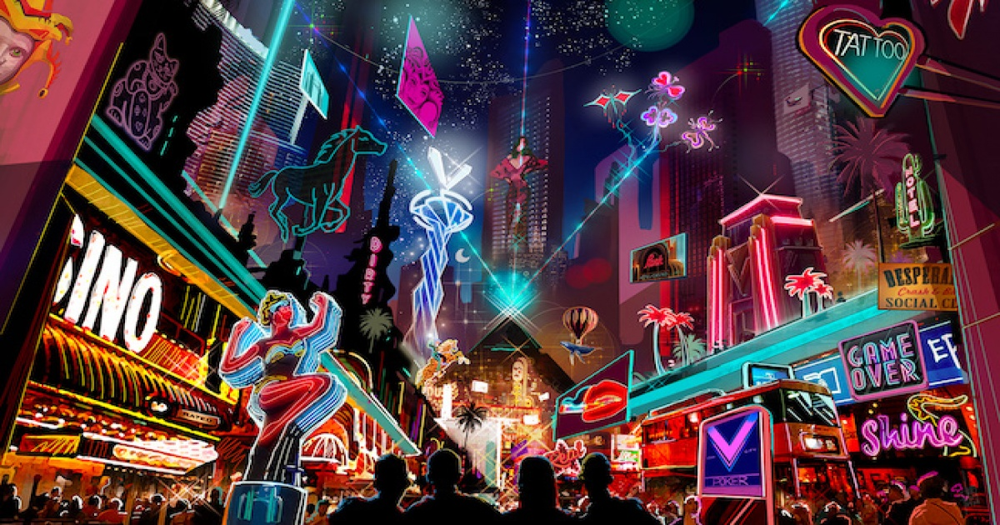

Проект за ADVB607 Иновативни форми на рекламата

Екип: Даниел Каменов, Андрей Тошев, Дейвид Досев, Пламена Дачева
Описание: Проект с цел проучване на социалните мрежи и метавселената и това как те са променили/променят/биха променили рекламата. Включва анализ на: социалните мрежи в съвременния медиен микс, ангажираност, трендове след ковид, различните социални мрежи, метавселената и нейните възможности.
Роля: В този проект следях работния процес и направих проучване за метавселената, като извадих примери и описах подробно всичките възможности, които има тази нова концепция.
Предизвикателства: Определяне на маркетингови цели, идентифициране на правилната платформа, разбиране на целевата аудитория, намаляване на степента на ангажираност, увеличаване на рекламните разходи.
Решения: Създаване на измерими цели, избиране на подходяща платформа, опознаване на клиента, ангажираност с помощта на социални медии, точно таргетиране.
Метавселена: Бъдещето изглежда светло за метавселената.Това вече не е концепция за научна фантастика. Дейностите, които в момента се извършват в реалния свят, може в крайна сметка да се осъществят в една метавселена в огромно количество.
Изводи: Социалните мрежи се ползват все повече и повече и стават все по-добра опция за реклами. Разходите са ниски и цялата получена информация е лесно измерима и точна.
Медия
 
